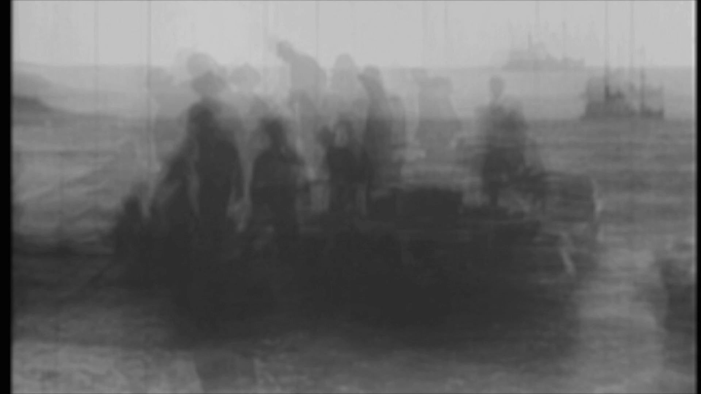

Lee Tusman
↩ Everyday
<
>
Title: Distances
w/ Amelia Marzec
Year: 2023
Medium: Video, Soundtrack
Pitch: Phasing piece applying ideas from Steve Reich. Made in Processing. Soundtrack on Modular synth. Public Domain Films and Samples.
Url: https://archive.org/details/distances-public-domain/↪
Shows ↴

 ©opyleft
©opyleft